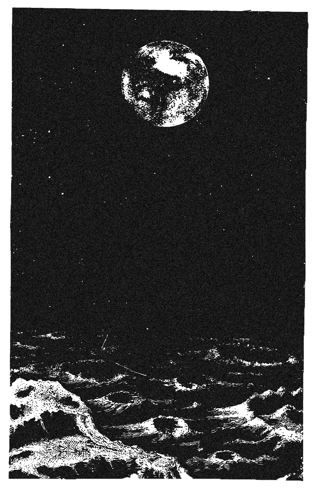

Scott Underwood's Portfolio
you are here
you are here
UX/UI Designer with a background in Digital Marketing, Information Systems, & Graphic Communications Management
Less technical offerings:
Responsible for overall web project development from research and strategy to layout, design, and implementation. Conducted user research to solve user frustrations while accomplishing the client’s goals.
Curated and edited bi-monthly business podcast. Episodes centered around entrepreneurs, startups, and corporations attempting to scale their companies at hockey stick growth rates.
Design & create landing pages to increase conversion rates, generate leads, and improve user experience. Conduct A/B testing on pages to increase conversions and decrease bounce rate. While my focus within the team is conversion optimization, I also have experience with Search Engine Marketing, Search Engine Optimization, Social Media Marketing , & Email Automation.
Collaborated with development teams and senior product manager to streamline and automate client’s complex business processes to increase efficiency.


{kind=link}
{kind=link}
{kind=link}
{kind=link}
{kind=link}